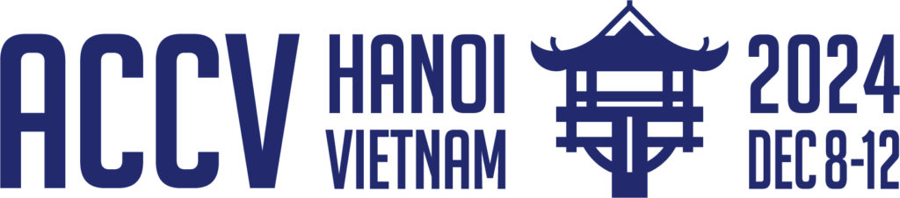

ACCV 2024 Workshop on
Rich Media with Generative AI

Overview
The goal of this workshop is to showcase the latest developments of generative AI for creating, editing, restoring, and compressing rich media, such as images, videos, neural radiance fields, and 3D scene properties. Generative AI models, such as GAN and diffusion models have enabled remarkable achievements in rich media from both academia research and industrial applications. For instance, cloud-based video gaming is a booming industry with an expected global market value of over $12 billion by 2025. Generative AI transforms the gaming industry by enabling anyone to build and design games without professional artistic and technical skills, empowering immeasurable market growth.
With the success of the 1st RichMediaGAI Workshop@WACV 2024, we expand the 2nd RichMediaGAI workshop@ACCV2024 by organizing competitions with industry-level data, soliciting paper submissions, and continuing to invite top-tier speakers from both industry and academia to fuse the synergy.
Important Dates + Author Guidelines
Author Guidelines: Formatting, Page Limits, Author Kits, and Submission Policies follow the ACCV 2024 Author Guidelines
| Challenges Data Available at: | August 6, 2024, 11:59 PM PST |
| Regular Paper Submission Deadline: | Extented to September 27, 2024, 11:59 PM PST |
| Challenges Results and Reports Submission Deadline: | Extended to October 04, 2024, 11:59 PM PST |
| Submission Site: | CMT Submission Site |
| Paper Review Back and Decision Notification: | October 4, 2024, 11:59 PM PST |
| Challenges Results and Decision Notification: | October 8, 2024, 11:59 PM PST |
| Camera-Ready Deadline: | October 10, 2024, 11:59 PM PST |
1. Regular Paper Submissions
Papers addressing topics related to image/video restoration, compression, enhancement, and manipulation, using generative AI technologies are welcome to submit. The topics include but are not limited to:
- Restoration and enhancement of rich media with generative AI
- Editing and manipulation of rich media with generative AI
- Compression and codec design with generative AI
- Modeling and rendering rich media with generative AI
- Neural radiance fields with generative AI
- Rich media creation and editing with large language models
- Acceleration of generative AI models on edge devices
Author Guidelines: Formatting, Page Limits, Author Kits, and Submission Policies follow the ACCV 2024 Author Guidelines
All papers must be uploaded to the submission site by the deadline. There is no rebuttal for this call. Reviews and paper decisions will be sent back to the authors on the date specified above.
2. Challenges
Cloud gaming poses tremendous challenges for compression and transmission. To avoid delay and bandwidth overload, high-quality frames need to be heavily compressed with very low latency. Traditional codecs like H.264/H.265/H.266 or recent neural video coding targeting natural videos generally do not perform well.
Generative AI technologies, e.g., super-resolution, image synthesis and rendering, can largely alleviate the transmission issues. Server-side computation and transmission can be reduced by leveraging the computation power of client de- vices. For example, the server can render low-resolution (LR) frames to transmit, and high-resolution (HR) frames can be computed on client side. In multiview gaming, the server can render part of views to transmit, and the remaining views can be computed by client devices. Nvidia's Deep Learning Super Sampling (DLSS) has commercialized this idea, and one key factor of its success is the large-scale ground-truth LR-HR or multiview gaming data used for training.
In comparison, the research community uses pseudo training data for many restoration tasks. For example, for super-resolution, the LR data is generated from the HR data by downsampling and adding degradation like noises and blurs. Such pseudo data do not match real gaming data. True LR gaming frames are high-quality, sharp and clear without noises or blurs. There are unnatural visual effects and object movements, but with limited motion blur, different from captured natural videos. We need ground-truth gaming data for effective training.
In this competition, a large computer-synthesized ground-truth dataset is provided, targeting two different applications:
- Track 1: Super Resolution in Deferred Rendering
- Mini training set: For each paired video sequence, 5 paired frames are randomly selected to form the mini dataset.
- Full training set
- Code scripts to read data and compute evaluation metrics
- Track 2: Multiview Video Frame Synthesis
- Mini training set: For each paired video sequence, 5 paired frames are randomly selected to form the mini dataset.
- Full training set
- Code scripts to read data and compute evaluation metrics
This track aims to restore HR images from LR images along with additional GBuffers during the deferred rendering stage (i.e., segmentation map, depth map), supporting the gaming solution of transferring LR images with assistive information using reduced bits and restoring HR images on client side.
The dataset has 320 LR-HR paired sequences at 1440p and 720p. Each sequence has 60 frames, totalling 19200 LR-HR paired frames. The sequences are rendered by the open source CARLA simulator with the Unreal Engine. The paired sequences capture 3D scenes from 8 different towns (20 static scenes and 20 dynamic scenes for each town). The corresponding paired segmentation maps and depth maps synchronize with the RGB images are also provided. Data collected from 7 towns form the training set, and data from the remaining 1 town form the test set.
Given the LR RGB images (720p) and additional GBuffers as input, the task is to develop algorithms to recover the HR RGB images (1440p).
Algorithms will be evaluated based on 4 objective quality metrics: PSNR and SSIM to measure pixel-level distortion, LPIPS and FID to measure perceptual quality. In detail, assume there are N methods, they will be ranked according to each metric, and a ranking score between [1,2N-1] will be given to each method (1st place 2N-1, 2nd place 2N-3, ..., last place 1). The average ranking score of all 4 metrics will be used as the overall score to rank the N methods. The amount of additional GBuffers used will also be considered (the more GBuffers used, the more bits consumed). For example, if two methods have similar overall score, the less bits consumed the better.
huggingface Download includes the following:
Challenge result submission: participants must submit the recovered HR RGB images for the test set to be evaluated. The download link of the results should be provided by the deadline.
This track aims to synthesize intermediate frames from a sparse set of input frames in multiview videos, along with camera intrinsic and extrinsic parameters and additional segmentation maps and depth maps, supporting the multiview gaming solution of transferring part of multiview frames with assistive information using reduced bits and generating the remaining frames on client side.
The dataset contains 160 sets of sequences rendered by CARLA simulator. Each set of sequences consists of static 3D scenes captured by six cameras mounted on the top of a car moving within one of the 8 towns. Each town has 20 sets of sequences and each sequence has 60 frames, totaling 57600 frames. The corresponding segmentation maps and depth maps synchronize with the RGB images are also provided.
For each set of sequences, a subset of multiview frames will be randomly selected as inputs, and the task is to synthesis the remaining frames.
Algorithms will be evaluated based on 4 objective metrics: PSNR and SSIM to measure pixel-level distortion, LPIPS and FID to measure perceptual quality. In detail, assume there are N methods, they will be ranked according to each metric, and a ranking score between [1,2N-1] will be given to each method (1st place 2N-1, 2nd place 2N-3, ..., last place 1). The average ranking score of all 4 metrics will be used as the overall score to rank the N methods. The amount of additional GBuffers used will also be considered (the more GBuffers used, the more bits consumed). For example, if two methods have similar overall score, the less bits consumed the better.
huggingface Download includes the following:
Challenge result submission: participants must submit the synthesized RGB frames for the test set to be evaluated. The download link of the results should be provided by the deadline.
The winners will be announced at the RichMediaGAI workshop, and the top 3 non-corporate winners of each track will be rewarded with 1st $2000, 2nd $1000, 3rd $500. The winners are invited to submit a paper to the RichMediaGAI workshop through the paper submission system. For the paper to be accepted, each paper must be a self-contained description of the method, and be detailed enough to reproduce the results. The paper submission must follow the ACCV 2024 Author Guidelines .
3. Invited Talks
Nanyang Technological University
Chen Change Loy is a President's Chair Professor with the College of Computing and Data Science, Nanyang Technological University, Singapore. He is the Lab Director of MMLab@NTU and Co-associate Director of S-Lab. He received his Ph.D. (2010) in Computer Science from the Queen Mary University of London. Prior to joining NTU, he served as a Research Assistant Professor at the MMLab of The Chinese University of Hong Kong, from 2013 to 2018. His research interests include computer vision and deep learning with a focus on image/video restoration and enhancement, generative tasks, and representation learning. He was on the editorial board of IEEE Transactions on Pattern Analysis and Machine Intelligence (TPAMI) from 2019 to 2024. He currently serves as an Associate Editor for the International Journal of Computer Vision (IJCV) and Computer Vision and Image Understanding (CVIU). He also serves/served as an Area Chair of top conferences such as ICCV, CVPR, ECCV, ICLR, and NeurIPS. He will serve as the Program Co-Chair of CVPR 2026. He is a senior member of IEEE.
Dong Tian is a Senior Director with InterDigital, Inc. He has been actively contributing to MPEG industry standards and academic communities for 20+ years. Prior to InterDigital, Inc. He holds 30+ U.S.-granted patents and 50+ recent publications in top-tier journals/transactions and conferences. His research interests include image processing, 3D video, point cloud processing, and deep learning. He serves as the Chair of MPEG-AI, MPEG 3DGH on AI-Based Graphic Coding since 2021, and MSA TC from 2023 to 2025, and a General Co-Chair of MMSP'20 and MMSP'21.

Northeastern Univeristy
Yanzhi Wang is currently an associate professor and faculty fellow at Dept. of ECE at Northeastern University, Boston, MA. His research interests focus on model compression and platform-specific acceleration of deep learning applications. His work has been published broadly in top conference and journal venues (e.g., DAC, ICCAD, ASPLOS, ISCA, MICRO, HPCA, PLDI, ICS, PACT, ISSCC, AAAI, ICML, NeurIPS, CVPR, ICLR, IJCAI, ECCV, ICDM, ACM MM, FPGA, LCTES, CCS, VLDB, PACT, ICDCS, RTAS, Infocom, C-ACM, JSSC, TComputer, TCAS-I, TCAD, TCAS-I, JSAC, TNNLS, etc.). He has received six Best Paper and Top Paper Awards, and one Communications of the ACM cover featured article. He has another 13 Best Paper Nominations and four Popular Paper Awards. He has received the U.S. Army Young Investigator Program Award (YIP), IEEE TC-SDM Early Career Award, APSIPA Distinguished Leader Award, Massachusetts Acorn Innovation Award, Martin Essigmann Excellence in Teaching Award, Massachusetts Acorn Innovation Award, Ming Hsieh Scholar Award, and other research awards from Google, MathWorks, etc.

City University of Hong Kong
Prof. Tianfan Xue is a Vice-Chancellor Assistant Professor at the Multimedia Lab (mmlab) in the Department of Information Engineering at the Chinese University of Hong Kong (CUHK). Prior to this, he worked in the Computational Photography Team at Google Research for over five years. He received his Ph.D. degree from the Computer Science and Artificial Intelligence Laboratory (CSAIL) at the Massachusetts Institute of Technology (MIT) in 2017. He also holds an M.Phil. degree from CUHK, obtained in 2011, and a Bachelor's degree from Tsinghua University. His research focuses on computational photography, 3D reconstruction, and generation. The anti-reflection technology he investigated is utilized by Google Photoscan, which boasts over 10 million users. The fast bilateral learning technique he researched has been integrated into the Google Tensor Chip. His recent work on bilateral based 3D reconstruction has won SIGGRAPH Honorable mention 2024. He also served as an area chair for WACV, CVPR, NeurIPS and ACM MM.
National University of Sigapore
Mike Z. Shou is an Assistant Professor at NUS. His research focuses on Computer Vision and Deep Learning, with an emphasis on developing intelligent system for video understanding and creation. Mike was awarded Wei Family Private Foundation Fellowship from 2014 to 2017. Mike received the best student paper nomination at CVPR2017. His team won the first place in the International Challenge on Activity Recognition (ActivityNet) 2017. Having won the Singapore NRF Fellowship award for his proposal tilted “Towards Next-generation Video Intelligence: Training Machines to Understand Actions and Complex Events“ which carries a research grant that provides early career researchers to carry out independent research locally. Mike is looking forward to developing new deep learning methods to allow machines to understand actions and complex events in videos -- this can power many applications such as perception system for self-driving car, caring-robot for the elderly, smart CCTV cameras, social media recommendation system, intelligent video creation tool for journalists and filmmakers, to name a few.
Google Research
Junfeng He is a tech lead and research scientist in Gogoal Research. He got his bachelor and master degree from Tsinghua Univeristy and PhD from Columbia University. His full publication list can be found in gogole scholar page. He has about 20 years research expriences on image retrieval and classification, image generation/editing and their detection, ranking, large scale (approximate) machine learing etc. His current research interests include the intersection of AIGC and user modeling, as well as post-training for generative models, and the intersection of computer vision and human vision/perception.
4. Program Schedule
Hover over the titles to view the abstracts of each talk.
| Title | Speaker | Slides | Time |
|---|---|---|---|
| Opening Remarks | 9:00 - 9:05 | ||
|
Talk: Artificial Intelligence and Compression - The Initiative and Beyond
Artificial intelligence has been booming in the past few years thanks to its success in a broad range of applications, from language to vision. Signal compression, especially visual compression, on the other hand, has been flourishing and has enabled numerous applications. In this talk, the connection between deep learning and compression will be analyzed and promoted. The initiative behind may lead to more trustable AI technologies and new compression systems. A summary will be given on elementary learning technologies for image/video/point clouds. In addition, the specific challenges will be discussed when applying deep learning for compression |
Dong Tian | -- | 9:05 - 9:50 |
|
Talk: OminiX: Towards unified library and acceleration framework for generative AI models on different hardware platforms
In the generative AI era, general users need to apply different base models, finetuned checkpoints, and LoRAs. Also the data privacy and real-time requirement will favor on-device, local deployment of large-scale generative AI models. It is desirable to develop a "plug-and-play" framework such that users can download any generative AI model, click and run on their own device. This poses significant challenge to the current AI deployment frameworks, which are typically time-consuming and requires human expertise of hardware and code generation. We present our effort of OminiX, which is a first step towards unified library and acceleartion of generative AI models across various hardware platforms. Integrating our unique front-end library and back-end instantaneous acceleration techniques, which will be open-source soon, we show capability of plug-and-play deployment and state-of-the-art acceleration of various generative AI models, starting from image generation, large language models, multi-model language models, speech generation and voice cloning, real-time chatting engine, real-time translation, video generation, real-time avatar, to name a few. This can be achieved without server, just on everyone's own platform. |
Yanzhi Wang | -- | 9:50 - 10:35 |
| Coffee Break | 10:35 - 10:50 | ||
|
Talk: User modeling for better AIGC and content design
Abstract TBD |
Junfeng He | -- | 10:50 - 11:35 |
| Lunch Break | 11:35 - 1:20 | ||
|
Talk: Improving Generalization in Image Restoration via 'Unconventional' Losses
In this talk, we explore strategies to enhance the generalization of image restoration and enhancement methods, focusing on the use of 'unconventional' losses. Traditional deep learning-based image restoration techniques often struggle with real-world scenarios due to domain gaps between synthetic and real-world data. We will discuss two new approaches that address this challenge. The first approach uses Contrastive Language-Image Pre-Training (CLIP) for unsupervised backlit image enhancement, employing a prompt learning framework to optimize the enhancement network. The second approach leverages a novel domain adaptation strategy in the noise-space using diffusion models, incorporating contrastive learning to align restored images to a clean distribution. By integrating these "unconventional" loss functions, we demonstrate significant improvements in the visual quality and generalization ability of image restoration and enhancement tasks. |
Chen Change Loy | -- | 1:20 - 2:05 |
|
Talk: How generative AI helps the traditional computational photography
Generative AI techniques, including text-to-image generation, text-to-video generation, and large language models, have experienced tremendous improvements in the last few years. Generative AI can now produce realistic images, videos, and texts that are sometimes difficult to differentiate from real ones. However, the majority of discussions about Generative AI focuses on content creation. In this talk, I will discuss another recent and evolving direction: how Generative AI can aid computational photography. In particular, with the help of Generative AI, many long-standing problems in computational photography have the potential for dramatic improvements. I will mainly cover three aspects: First, how Generative AI can dramatically improve the quality of image processing. Second, how Generative AI can change the entire camera pipeline. Third, how Generative AI assists in image quality assessment. |
Tianfan Xue | 2:05 - 2:50 | |
|
Talk: Show-o: One Single Transformer to Unify Multimodal Understanding and Generation
Exciting models have been developed in multimodal video understanding and generation, such as video LLM and video diffusion model. One emerging pathway to the ultimate intelligence is to create one single foundation model that can do both understanding and generation. After all, humans only use one brain to do both tasks. Towards such unification, recent attempts employ a base language model for multimodal understanding but require an additional pre-trained diffusion model for visual generation, which still remain as two separate components. In this work, we present Show-o, one single transformer that handles both multimodal understanding and generation. Unlike fully autoregressive models, Show-o is the first to unify autoregressive and discrete diffusion modeling, flexibly supporting a wide range of vision-language tasks including visual question-answering, text-to-image generation, text-guided inpainting/extrapolation, and mixed-modality generation of any input/output format, all within one single 1.3B transformer. Across various benchmarks, Show-o demonstrates comparable or superior performance, shedding light for building the next-generation video foundation model |
Mike Zheng Shou | -- | 2:50 - 3:35 |
| Coffee Break | 3:35 - 3:50 | ||
|
Challenge Report
|
Lebin Zhou | -- | 3:50 - 4:50 |
| Lighting Session | Poster presentors | -- | 4:50 - 5:00 |
| Conclusions, Open Problems and Final Remarks | ALL |
5. List of Papers
| Lebin Zhou, Kun Han, Nam Ling, Wei Wang, Wei Jiang | GameIR: A Large-Scale Synthesized Ground-Truth Dataset for Image Restoration over Gaming Content | Poster |
| Ryuta Yamakura, Keiji Yanai | Vector Logo Image Synthesis Using Differentiable Renderer | Poster |
| Oliverio Nathanael, Jonathan Samuel Lumentut, Edbert Valencio Angky, Nicholas Hans Muliawan, Felix I Kurniadi, Alfi Yusrotis Zakiyyah, Jeklin Harefa | HYPNOS : Highly Precise Foreground-focused Diffusion Finetuning for Inanimate Objects | Poster |
| Sanhita Pathak, Vinay Kaushik, Brejesh Lall | GraVITON: Graph based garment warping with attention guided inversion for Virtual-tryon | Poster |
| Lebin Zhou, Wei Jiang, Wei Wang | Image and Video Compression using Generative Sparse Representation with Fidelity Controls | Poster |
5. Organizers
Futurewei Technologies
Santa Clara University

Chinese Univeristy of Hong Kong
University of California Irvine
Guard Strike
Contacts
Dataset related questions: Lebin Zhou
Paper related and other general questions: Wei Jiang, Jinwei Gu